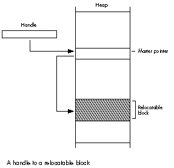

In Object Pascal, objects are just like handles in that they refer to relocatable blocks
of memory. To use objects safely, the programmer needs to recognize that the
Macintosh Memory Manager can move the block of memory referred to by an object or
handle, although only at well-defined times. This article gives guidelines for the safe
use of objects in ObjectPascal.
The simplicity and elegance of Object Pascal's syntax is a two-edged sword. On the one
hand, it makes Object Pascal feel like a natural extension to Pascal; on the other, it can
lull a programmer into a false sense of security. For although the syntax of Object
Pascal treats objects as though they were statically allocated, the fact is that in Object
Pascal, objects arealways allocated as relocatable blocks (handles, in the vernacular)
in the application heap. Thus, when you write Object Pascal programs for the
Macintosh, you must be eternally aware that objects are handles, and program
accordingly. This article tells you how to do that with MPW Pascal and TML Pascal, two
compilers that can be used with MacApp in the MPW environment. In addition, it gives
some tips for using handles outside the context of objects.
To get an idea of how Object Pascal implements objects, let's compare the code
fragments in Figure 1. Each column of code accomplishes the same thing: the definition
and use of a data structure representing a graphical shape. The only difference is that
the left column is implemented with objects, while the right column is implemented
with handles. The code in these two columns is very similar, and a comparison of the
two reveals what goes on behind the scenes.
1 TYPE 2 TShape = OBJECT (TObject) 3 fBounds: Rect; 4 fColor: RGBColor; 5 END; 6 7 8 9 VAR 10 aShape: TShape; 11 sameShape, copiedShape: TShape; 12 13 BEGIN 14 NEW(aShape); 15 FailNIL(aShape); 16 17 aShape.fBounds := gZeroRect; 18 aShape.fColor := gRGBBlack; 19 20 sameShape := aShape; 21 22 copiedShape := TShape(aShape.Clone); 23 24 FailNIL(copiedShape); 25 26 END; 1 TYPE 2 TShapeHdl = ^TShapePtr; 3 TShapePtr = ^TShape; 4 TShape = RECORD 5 fBounds: Rect; 6 fColor: RGBColor; 7 END; 8 9 VAR 10 aShape: TShapeHdl; 11 sameShape, copiedShape: TShapeHdl; 12 13 BEGIN 14 aShape := TShapeHdl(NewHandle(SIZEOF(TShape))); 15 FailNIL(aShape); 16 17 aShape^^.fBounds := gZeroRect; 18 aShape^^.fColor := gRGBBlack; 19 20 sameShape := aShape; 21 22 copiedShape := aShape; 23 FailOSErr(HandToHand(Handle(copiedShape))); 24 FailNIL(copiedShape); 25 26 END;
Figure 1.
A Comparison of Code Implemented with Objects vs. Handles
The first thing to observe is that any variable of an object type is actually areference
to an object. That is, the variable is a handle that refers to a block of memory
containing the object's data. Thus, in the left column the value of the variableaShape is
a handle. It contains the address of a master pointer that in turn points to the object's
data. The size of the variableaShape is four bytes--the size of an address and not the
size of the object itself. This is very much the same as the right column, in which the
variableaShape is explicitly declared to be a handle. In fact, the only difference
between the two is that the object version ofTShape has an implicit field containing the
object's class ID, located just before the first declared field. The class ID is an integer
value that allows the object's type to be identified at run time.
Line 14 of each column shows how a TShape data structure is created. Since handles
must be dynamically allocated in the heap, it follows that objects must be dynamically
allocated as well. This is the purpose of the call to NEW in the left column. Note that
NEW works completely differently for objects and for other kinds of memory allocation.
For objects, NEWgenerates a call to the internal library procedure %_OBNEW, which,
aside from some debugging details, simply calls NewHandle, just like the handle-based
code on the right does.
The call to FailNIL in line 15 detects the case where allocation of the object or handle
fails. FailNILis part of MacApp's failure-handling library and will be discussed in
greater detail later.
Lines 17 and 18 reference fields of aShape. In the object code, the syntax leads you to
believe that no handle dereferencing takes place, but of course we know better. What
the Pascal compiler does is to implicitly dereference the handle for you. In other
words, it does the very same thing as the code in the right column does explicitly.
Line 20 assigns one object reference to another, causing both aShapeand sameShape
to refer to thesame object. Line 22 (plus 23 in the right column) produces another
shape whose contents are exactly the same as aShape. In the object case, the Clone
method is used to produce a copy of the object referenced by aShape; copiedShape is
assigned a reference to the newly created object. Clone is implemented by calling the
Toolbox routine HandToHand, as is used in the right column. (FailOSErris a MacApp
routine that checks the result of HandToHand.) Since copying an object (or a handle)
requires a memory allocation for the new object, FailNIL is used to ensure that the
copy succeeded. The moral of this story is that you have to be very careful about how
you use objects. For example, you must remember that every time you refer to a field
of an object, you're really dereferencing a handle. If you're not careful, you're likely
to wind up with a corrupt heap.
Handles have some interesting properties. If you've done any serious programming on
the Macintosh (and I don't mean HyperTalk), then you know what I mean. If not, then
(1) you've been spared the sorrows of a corrupt heap, and (2) you ought to get How to
Write Macintosh Software , 2nd ed., by Scott Knaster (Hayden Books, 1988). Chapters
2 and 3 tell you all you need to know about handles. In the meantime, I'll give you a
thumbnail description. In the heap, relocatable blocks of memory are referenced by
double indirection, as shown in Figure 2. The first pointer (called the handle) points
to a nonrelocatable pointer (called the master pointer), which in turn points to a
block of memory. The Memory Manager can move the block of memory, and when this
happens the address in the master pointer is changed to the block's new address.

Figure 2. A Handle to a Relocatable Block
This doesn't create a problem as long as you access the block via the handle. However,
at times it's necessary or desirable for the sake of efficiency to dereference the
handle--that is, make a copy of the block's master pointer, and then use that pointer
to access the block by single indirection. And even this isn't a problem--as long as the
block of memory doesn't move.
Well, we have bad news: it's bound to move at some point, when the Memory Manager
needs to compact the heap. When this happens, the master pointer itself is correctly
updated, but your copy of it is left dangling. Now for the good news: relocatable blocks
of memory only move at certain well-defined times. Thus, the key to dereferencing
handles is knowing when the blocks of memory they point to may move.
Oh, and one more bit of bad news: the Memory Manager has no garbage collection. This
means you're responsible for disposing of handles when you've finished with them, and
making sure you don't leave any dangling pointers.
Because the Memory Manager moves blocks of memory only at certain well-defined
times, it's possible to come up with reliable guidelines for safe object usage. Keep
these guidelines firmly in mind anytime you program in Object Pascal:1. Don't pass
fields of objects as parameters to any routine unless you know it's safe.
In Pascal, when a routine is called, each parameter is passed by value or by address.
Passing a parameter by value pushes a copy of the parameter's value onto the stack.
Passing a parameter by address pushes the parameter's address onto the stack. (This
should immediately trigger a handle alert in your head.) Passing thevalue of an object
field is no problem. But passing theaddress of an object field on the stack is a
potentially unsafe situation. That's because the address points to a memory location
within an object--in other words, the object is dereferenced. If the object should
happen to get relocated, the address won't point into the object anymore.
Because there's no way to predict what the address points to after memory relocation,
and hence no way to predict the effect of using the address, all manner of strange things
can occur. Making this type of bug extra difficult to track down is the fact that passing
parameters unsafely works most of the time--it only fails when the heap is so full
that the Memory Manager must relocate memory to satisfy a request. You do not want
these kinds of bugs in your program.
Fortunately, Object Pascal programmers have a big advantage over their conventional
colleagues: the compiler actually tells you when a field of an object is used in a
potentially unsafe way. This occurs for VAR parameters, which by definition are
passed by address, and for non- VAR parameters whose size is greater than four bytes.
The latter case is because the compiler actually passes such parameters by address,
expecting the called routine to use the address to make a local copy of the data.
If you stop to think about it, this error message is a really nice feature. Especially
when compared to what the compiler does when any other handle is unsafely
dereferenced, which is nothing. Nada. Zip. Even the most experienced and
handle-cognizant of programmers occasionally writes code that unsafely dereferences
a handle.
Let's look at an example. Consider the following definitions:
TYPE
TShape = OBJECT (TObject)
fBounds: Rect;
fColor: RGBColor;
END;
VAR aShape: TShape;
Attempting to compile the line
OffsetRect(aShape.fBounds, 10, 20);
results in the following error:
# OffsetRect(aShape.fBounds, 10, 20); # ? ### pascal - Error 815 Unsafe use of an object field as a var or > 4 byte parameter
In other words, this line of code has dereferenced the object's handle at a time when the
object may move while it is dereferenced. In this case, the address of the field
fBounds is computed and passed to OffsetRect. If aShape were to move before
OffsetRect used it, then the computed address wouldn't point at fBounds anymore.
Bombs away! Maybe the message ought to read "Error 815 You are about to commit
yourself to spending an indeterminant number of days working with Macsbug. Please
reconsider."
A simple way of avoiding the error is to avoid using the field as a parameter. Instead,
use a temporary variable:
VAR
r: Rect;
r := aShape.fBounds;
OffsetRect(r, 10, 20);
aShape.fBounds := r;
While this construct is guaranteed to be safe, it could be rather onerous if you had to
do this every time you wanted to use an object field as a parameter. Actually, it turns
out that many cases can easily be identified as safe because the routine being called
doesn't trigger memory relocation. But how do you know when it's safe? Mostly, you
need to know what causes objects to move.
Memory relocation can be triggered if (a) the called routine is in a different segment
from the caller, since loading a segment may trigger memory relocation; (b) the
called routine calls a ROM routine that triggers relocation; or (c) the called routine
calls another routine that fits the criteria of (a) or (b). In the case of OffsetRect,
it's in ROM so it won't require a segment load, and it is a ROM routine that doesn't
move memory. (I know that because it isn't listed in Appendix A of theInside Macintosh
XRef .)
When you do know it's safe (as with OffsetRect), you can turn off the compiler's
parameter checking, effectively telling the compiler to keep quiet because you know
what you're doing. Do this by using the $H compiler directive:
{$Push}{$H-}
OffsetRect(aShape.fBounds, 10, 20);
{$Pop}
The first line turns off parameter checking. $Push saves the state of the compiler
directives; $H- tells the compiler not to check parameters for unsafe usage. In the
second line the object field is used as a parameter. Because $H- was issued, no
compiler error is generated. The third line uses $Pop to restore the state of the
directives at the time the last $Push was issued.
The trick, of course, is in knowing when to use $H and when to use a copy of the
object field instead. Based on the three causes of memory relocation, it's possible to
identify the conditions in which you should avoid passing the field of an object as a
parameter.
VAR parameter, or a field greater
Appendix A lists routines defined in Inside Macintosh , volumes I-V,
that may trigger memory relocation. These include all system-defined
routines, such as those in ROM and in packages. Any routine defined in
Inside Macintosh , volumes I-V, that does not appear in Appendix A
will not trigger memory relocation. (A similar appendix appears in
each Inside Macintosh book, but only applies to that book. So use the
appendix in the XRef because it applies to all five volumes.)
Calling a routine in another segment may require loading it into
memory, potentially triggering memory relocation. If the called
routine is in the same segment as the caller, then the segment must
already be in memory and you're safe. If the called routine is in a
different segment from the caller, you're still safe if the called
routine's segment is a resident.
Resident segments are defined by MacApp ® to be segments that are
loaded into memory when the program starts up, and that stay in
memory throughout the life of the program. Thus calling a routine in a
resident segment never requires loading it into memory. If you know a
routine is in a resident segment, you can call it without worrying
about a segment load relocating memory. If you're not sure a routine
is in a resident segment, play it safe.
When the called routine is in the same segment as the caller, but
the called routine indirectly causes segment loads by calling routines
in other, nonresident segments. If you don't know whether a routine
does this, then play it safe.
When the called routine calls ROM routines that may trigger
memory relocation. Again, if you're not sure, play it safe.
NEW.
The parameter toNEW is aVAR parameter, and sinceNEW callsNewHandle, it
most definitely may trigger memory relocation. Unfortunately, MPW Pascal
compilers before version 3.1 didn't generate an error forNEW when you passed
an object field as the parameter, and TML Pascal version 3.0 still doesn't. So
be careful.
Note that MacApp contains functions that allocate objects as well. The Clone
method copies an object, returning a reference to the copy as its result.
NewObjectByClassName and NewObjectByClassIdcreate new objects.
Because of the way the compiler generates code for functions, it is safe to
assign a function result to the field of an object.
FailNIL after every attempt to create an object, copy an object, or
FailNIL, defined in MacApp's UFailure unit, has a single parameter--a
reference to an object, handle, or pointer. If that reference is NIL then
FailNIL signals failure, essentially causing the application to back out of
what it was doing and resume processing events. Calling FailNIL is how you
verify that a memory allocation request actually succeeded. It works because
the Memory Manager returns NIL if there isn't enough memory to satisfy a
memory allocation. Since heaps have a finite amount of space, the potential
exists that any allocation request can fail. So check each and every request
just to make sure. Failure to heed this advice leads to bus errors and address
errors when your program tries to dereference NIL handles.
Be aware that this description of FailNIL just scratches the surface of
MacApp's failure-handling facilities. The MacApp technical manuals go into
greater detail than space permits in this article.
The Macintosh doesn't have automatic garbage collection, so you're
responsible for freeing (disposing of) any objects you create. Failing to free
objects when you've finished with them leads to a heap that slowly fills up
with garbage, eventually suffocating the application.
Keep in mind that when you free an object, any references to it are no longer
valid and should be set to NIL. Nasty things happen if you use references to
objects that no longer exist. If you're lucky, the MacApp debugger will stop
your program the first time you refer to a nonexistent object. But sometimes
even the MacApp debugger gets fooled. This happens if the memory occupied by
the freed object hasn't yet been written over, or even worse, if another object
or handle was allocated using the same master pointer as the object that was
freed. (Try debugging that sometime!)
Sometimes it really makes life easier to ensure that an object won't be moved
no matter what happens. Objects, like handles, can be locked. In fact, MacApp
provides a method for this purpose. It's calledLock and it's defined
inTObjectso it can be used on any object. Lock takes aBoolean value as its
only parameter, which when true "locks" the object's location in memory,
and when false makes the object relocatable again. Lock returns aBoolean
result that indicates whether the object was locked whenLock was called. This
is handy because you can lock an object, do what you need to do, thenrestore
the object's lock state to what it was before :
VAR
wasLocked: BOOLEAN;
BEGIN
wasLocked := anObject.Lock(TRUE);
{do what you need to do}
wasLocked := anObject.Lock(wasLocked);
END;
If you're not using MacApp, you can lock an object by casting it to be a handle
and using HLock and HUnlock, the Memory Manager routines for locking and
unlocking handles:
HLock(Handle(anObject));
{ Do what you need to do. }
HUnlock(Handle(anObject));
Keep in mind that it's unwise to lock objects (or handles) for long periods of
time. Nonrelocatable objects cause heap fragmentation, which reduces the
effectiveness of the heap. (For further details, see Richard Clark's article
"The Secret Life of the Memory Manager" in this issue.)
Even in an object-based program, it's occasionally necessary to use handles instead of
objects. While handle usage is subject to the same guidelines just described for
objects, there are some additional wrinkles:
Unlike for fields of objects, the compiler doesn't produce an error when
passing a field of a handle by address. All of the same problems with using
fields of objects apply to fields of handles, but since the compiler offers no
help in detecting unsafe uses, it's completely up to you to ensure that you use
fields of handles safely. Chalk one up for objects.
WITH statements that dereference handles. For example:
TYPE
TShapeHdl = ^TShapePtr;
TShapePtr = ^TShape;
TShape = RECORD
fBounds: Rect;
fColor: RGBColor;
END;
VAR
aShape: TShapeHdl;
BEGIN
aShape := NewHandle(SIZEOF(TShape));
FailNIL(aShape);
WITH aShape^^ DO
BEGIN
fBounds := gZeroRect;
fColor := gRGBBlack;
END;
END;
Not only does the WITH statement simplify the Pascal text, it also lets the
compiler perform code optimizations. Specifically, it stores the address
fromaShape^^ in a register so that it can be reused throughout the scope of
the WITH without being recomputed. As you might imagine, any operation that
triggers memory relocation within the scope of the WITH will invalidate the
address contained in the register. Bad news.
By the way, using WITH statements on objects is okay! The compiler
recognizes that the WITH is dereferencing an object and makes sure safe code
is generated. Objects 2, handles 0.
For example, using the shape definitions given above, this is a potentially
unsafe use of a handle field:
aShape^^.fBounds := FunctionThatReturnsARect;
The problem is that the Pascal compiler dereferences the handle aShape
before calling the function. Thus, a function that triggers memory relocation
or is in another segment will invalidate the address obtained by dereferencing
the handle.
Once again, this type of usage is okay for objects. As for WITH statements, the
compiler recognizes when a function result is assigned to an object field and
ensures that safe code is generated.
In conclusion, you can avoid the pitfalls in writing Object Pascal programs, by
understanding how objects work and by using the guidelines described in this article.
Then instead of having to spend undue time debugging, you can relax and enjoy the
advantages of object-based programming.
CURT BIANCHI, displaced Lakers fan, has never met a taco he didn't like. He's been at
Apple more than three years, where he first worked on MacApp and now concentrates
on future system software. This southern California native (he asks you not to hold
that against him) earned a BSICS in 1981 from the University of California-Irvine,
followed by stints at Link Systems and Monogram Software, and self-employment doing
software odd jobs, including working on computer dating software. His hobbies include
music, photographing trains, avoiding serious injury on the basketball court, and
rooting for the Lakers from afar .*